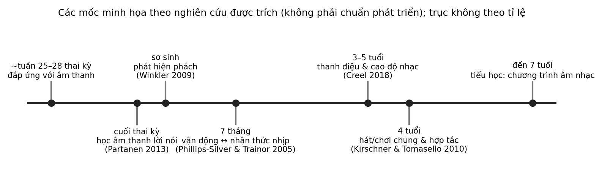

1 Tiếng vọng từ nguyên thủy — Tại sao chúng ta có âm nhạc?
Một người mẹ ngồi bên giường bệnh viện, ngân nga khe khẽ cho đứa con mới sinh được vài ngày. Đứa trẻ chưa biết nói, chưa biết gọi tên mình, nhưng nhịp thở thường lắng xuống và đôi mắt tìm về phía giọng hát. Cảnh ấy lặp lại, bằng nhiều thứ tiếng và nhiều giai điệu khác nhau, ở rất nhiều gia đình. Nó đặt ra một câu hỏi nghe có vẻ giản dị: vì sao con người hát?
Câu hỏi trung tâm
Điều gì quan sát được về âm nhạc ở người rất nhỏ và giữa các nền văn hóa, và điều gì vẫn chỉ là giả thuyết về nguồn gốc của nó? Đến cuối chương, chúng ta cần phân biệt được hai loại phát biểu: những phát biểu dựa trên quan sát có thể lặp lại, và những phát biểu là suy đoán về một quá khứ mà ta không còn trực tiếp tiếp cận được.
Cách đọc chương này
Chương mở đầu của một cuốn sách về âm nhạc thường bị cám dỗ kể một câu chuyện lớn: tổ tiên quây quần bên lửa, tiếng hát có trước lời nói, âm nhạc là “ngôn ngữ đầu tiên” của loài người. Những hình ảnh ấy hấp dẫn, nhưng phần lớn chưa được kiểm chứng. Vì vậy chương này đi theo trật tự ngược lại: bắt đầu từ điều đo được ở cơ thể trẻ nhỏ, đi qua tiếng hát ru trong gia đình, sang những điểm chung và khác biệt giữa các truyền thống âm nhạc, và chỉ đến cuối mới bàn về các giả thuyết nguồn gốc.
Độ tin cậy giảm dần theo trật tự đó. Mỗi phát biểu quan trọng đều mang nhãn mức độ bằng chứng (Mạnh, Trung bình, Sơ bộ, Giả thuyết hoặc Thực tiễn sư phạm), kèm nguồn để người đọc tự kiểm tra. Ở chương này, hầu hết các nhãn sẽ nằm ở mức Sơ bộ hoặc Giả thuyết; đó là phản ánh trung thực của tài liệu hiện có chứ không phải sự thiếu quyết đoán.
1. Cơ thể nghe trước khi nói
Điểm khởi đầu của chương là một điều quan sát được: hệ thính giác của con người bắt đầu hoạt động trước khi chúng ta chào đời. Vào những tuần cuối thai kỳ, thai nhi đã tiếp nhận âm thanh từ bên ngoài cơ thể mẹ, và các nghiên cứu trên trẻ sơ sinh cho phép chúng ta hỏi xem trải nghiệm đó để lại dấu vết gì.
Trong một thí nghiệm của nhóm Partanen, thai nhi được nghe lặp đi lặp lại một từ giả có những thay đổi về cao độ và nguyên âm vào các tuần cuối thai kỳ. Sau khi sinh, trẻ đã được nghe có phản ứng điện não khác với nhóm đối chứng trước những thay đổi trong âm thanh ấy, điều bước đầu cho thấy hệ thần kinh thính giác có thể học từ trước khi sinh Sơ bộ (Partanen và c.s., 2013). Một nghiên cứu ở hai quốc gia là Thụy Điển và Hoa Kỳ cho thấy trẻ sơ sinh mới vài chục giờ tuổi phản ứng khác nhau với nguyên âm của tiếng mẹ đẻ và nguyên âm của ngoại ngữ, theo hướng gợi ý rằng trải nghiệm trong tử cung đã để lại dấu vết Sơ bộ (Moon và c.s., 2013).
Cả hai nghiên cứu đều xoay quanh lời nói chứ không phải âm nhạc. Chúng được nhắc ở đây vì lời nói cũng có nhịp và đường nét cao độ, những chất liệu mà âm nhạc sử dụng, và vì chúng cho thấy thính giác của trẻ không bắt đầu từ con số không vào ngày sinh. Tuy vậy, cả hai đều có quy mô nhỏ, chỉ đo phản ứng của não hoặc hành vi rất ngắn, và chưa nói gì về việc trải nghiệm trước sinh ảnh hưởng đến sự phát triển lâu dài ra sao.
Về nhịp, một nghiên cứu ghi điện não ở trẻ sơ sinh vài ngày tuổi cho thấy phản ứng khác biệt khi một phách mạnh bị bỏ khỏi chuỗi trống, điều gợi ý rằng khả năng phát hiện phách có thể xuất hiện rất sớm Sơ bộ (Winkler và c.s., 2009). Đây là một nghiên cứu đơn lẻ với nhóm trẻ nhỏ; nó đo phản ứng của não chứ không đo việc trẻ “cảm nhận nhịp” theo cách người lớn mô tả. Chương 2 sẽ quay lại với đồng bộ hóa nhịp (entrainment) ở trẻ nhỏ, nơi có thêm bằng chứng về vận động. Tổng quan của Trehub về nguồn gốc phát triển của năng lực âm nhạc cũng mô tả rằng trẻ nhũ nhi rất sớm đã nhạy với đường nét cao độ và nhịp của âm thanh, dù chưa được dạy nhạc Sơ bộ (Trehub, 2003).
Cách thiết kế thường gặp trong những nghiên cứu như vậy là cho trẻ nghe một chuỗi âm đều đặn, thỉnh thoảng chen vào một âm khác thường, rồi so sánh phản ứng của não với âm quen và âm lạ. Nếu phản ứng với âm lạ lớn hơn một cách nhất quán, nhà nghiên cứu suy ra rằng não đã “dự đoán” điều sắp xảy ra và nhận ra sự bất ngờ. Suy luận ấy hợp lý nhưng gián tiếp: cùng một phản ứng có thể xuất phát từ những khác biệt âm thanh đơn giản chứ không phải từ việc nhận ra khuôn nhịp, nên các nghiên cứu cần những điều kiện đối chứng được thiết kế cẩn thận.
Nghiên cứu trẻ sơ sinh có những giới hạn riêng. Trẻ không thể nói điều chúng cảm nhận, nên nhà nghiên cứu dựa vào những tín hiệu gián tiếp như điện não, thời gian nhìn, nhịp tim hoặc nhịp mút. Mỗi tín hiệu có thể được diễn giải theo nhiều cách, và vì vậy kết luận từ một thí nghiệm đơn lẻ cần được giữ ở mức bước đầu cho đến khi có các nghiên cứu lặp lại độc lập.
Từ các quan sát ấy, chúng ta có thể giữ lại một mệnh đề khiêm tốn: cơ thể là điểm khởi đầu quan sát được của âm nhạc. Mệnh đề này có nghĩa hẹp. Ta quan sát được trẻ rất nhỏ đáp ứng với nhịp và ngữ điệu, và ta không cần giả định điều gì về nguồn gốc của loài người để nói như vậy.
Cần tách điều này khỏi một niềm tin thường được nhắc tới trong các lời khuyên nuôi dạy con: nghe nhạc cổ điển khi mang thai làm đứa trẻ thông minh hơn, một niềm tin bắt nguồn từ “hiệu ứng Mozart”, vốn là một kết quả ngắn hạn ở người lớn và không được các phân tích gộp xác nhận như một tác động rộng lên trí tuệ Neuromyth (Pietschnig và c.s., 2010). Hiện chưa có dữ liệu đủ lớn ở Việt Nam về mức độ phổ biến của niềm tin này; đây là hướng nghiên cứu ưu tiên. Điều các nghiên cứu ở trên hỗ trợ chỉ là một nhận định hẹp hơn nhiều: thính giác của thai nhi hoạt động và có thể học. Chúng không cho thấy việc cho thai nhi nghe một loại nhạc cụ thể sẽ tạo ra lợi ích nhận thức nào. Với thai phụ, lời khuyên an toàn nhất là tránh âm lượng lớn kéo dài và hỏi ý kiến bác sĩ sản khoa khi có băn khoăn.
2. Hát ru và tương tác mẹ–con
Nếu cơ thể là điểm khởi đầu, thì tiếng hát hướng đến trẻ nhỏ là một trong những bối cảnh quan sát được rõ nhất. Các tổng quan của Trehub và Trainor về những bài hát dành cho trẻ nhũ nhi mô tả hai nhóm khá khác nhau: hát ru, thường chậm và êm, và những bài hát vui chơi, thường sinh động hơn; chúng cho thấy người chăm sóc dùng những kiểu hát khác nhau cho những mục đích khác nhau Sơ bộ (Trehub & Trainor, 1998).
Một số thí nghiệm đã so sánh tiếng hát với tiếng nói. Khi cho trẻ khoảng sáu tháng tuổi xem video người mẹ lúc nói và lúc hát, trẻ có xu hướng chú ý nhiều hơn và cử động ít hơn khi mẹ hát Sơ bộ (Nakata & Trehub, 2004). Trong một thí nghiệm khác, tiếng hát giúp trẻ nhũ nhi yên ổn lâu hơn so với tiếng nói trước khi bắt đầu quấy khóc, trong điều kiện phòng thí nghiệm Sơ bộ (Corbeil và c.s., 2016). Một nghiên cứu gần đây hơn ghi nhận các chỉ số sinh lý cho thấy trẻ thư giãn hơn khi nghe hát ru xa lạ từ các nền văn hóa khác so với các bài hát không phải hát ru Sơ bộ (Bainbridge và c.s., 2021). Điểm đáng chú ý của kết quả sau cùng là trẻ chưa từng nghe những bài hát ấy, nên sự thư giãn khó giải thích chỉ bằng quen thuộc.
Hãy thử áp dụng các câu hỏi đánh giá bằng chứng vào những kết quả trên. Về thiết kế, đây là các thí nghiệm ngắn có đối chứng trong phòng thí nghiệm, không phải theo dõi dài hạn. Về nhóm so sánh, tiếng nói của cùng một người hay một bài hát khác là lựa chọn hợp lý, nhưng chưa loại trừ khả năng trẻ đơn giản thích những âm thanh chậm và lặp lại. Về kết quả đo, đó là chú ý, cử động, quấy khóc hoặc chỉ số sinh lý, tức là phản ứng gần chứ không phải sự phát triển ngôn ngữ hay nhận thức. Về quần thể, đó là trẻ nhũ nhi trong những bối cảnh nghiên cứu cụ thể, chưa chắc giống trẻ ở Việt Nam. Từng điểm không làm kết quả mất giá trị, nhưng chúng giải thích vì sao các kết quả này đáng ghi nhận mà chưa đủ để xếp vào bằng chứng mạnh.
Ngoài đời, tiếng hát ru không đến một mình. Nó đi cùng cái bế, hơi ấm, ánh mắt và nhịp đung đưa của người chăm sóc, trong khi thí nghiệm thường tách riêng âm thanh để kiểm soát. Vì vậy kết quả trong phòng thí nghiệm có thể chưa phản ánh trọn vẹn điều xảy ra trong một căn phòng thật, và cũng chưa cho biết phần đóng góp riêng của âm nhạc so với các tín hiệu đi kèm.
Vì sao tiếng hát lại có tác dụng khác với tiếng nói? Một cách giải thích khả dĩ là tiếng hát hướng đến trẻ thường chậm hơn, lặp lại nhiều hơn và có đường nét cao độ dễ đoán hơn, nên dễ thu hút sự chú ý và giúp trẻ ổn định trạng thái. Đây là một giả thuyết cần kiểm chứng chứ chưa phải cơ chế đã được xác lập Giả thuyết (Trehub & Trainor, 1998).
Ba giới hạn cần được nói rõ. Thứ nhất, các thí nghiệm đo phản ứng ngắn hạn trong phòng thí nghiệm, với mẫu nhỏ hoặc mẫu thuộc một số bối cảnh nhất định; chúng không cho thấy tiếng hát ru tạo ra lợi ích phát triển lâu dài. Thứ hai, người chăm sóc không cần hát hay để có một mối quan hệ tốt với con; không có cơ sở nào để suy ra rằng đứa trẻ không được hát ru sẽ thiệt thòi. Thứ ba, những kết quả này mô tả trung bình của nhóm, trong khi mỗi đứa trẻ có ngưỡng thoải mái và nhu cầu khác nhau, và người lớn cần đọc tín hiệu của chính đứa trẻ trước mặt mình.
Ở Việt Nam, hát ru là một thực hành quen thuộc trong nhiều gia đình, với những làn điệu mang đặc điểm âm điệu của từng vùng. Chúng ta sẽ quay lại mối quan hệ giữa thanh điệu và đường nét giai điệu ở Chương 5. Hiện chưa có dữ liệu đủ lớn ở Việt Nam về việc tiếng hát ru tương tác với phản ứng của trẻ nhỏ ra sao; các nghiên cứu được trích ở đây được thực hiện ở những bối cảnh khác, và việc áp dụng nguyên văn cho trẻ em Việt là một giả định cần được kiểm tra.
3. Điểm chung xuyên văn hóa: phổ biến nhưng không đồng nhất
Câu hỏi tự nhiên tiếp theo là liệu những gì thấy ở trẻ nhỏ có tương ứng với những quy luật chung của âm nhạc ở người lớn trên thế giới hay không. Hai công trình lớn đã thử trả lời bằng cách phân tích hệ thống các bản ghi âm nhạc và mô tả dân tộc học, thay vì dựa vào một vài ví dụ nổi bật.
Công trình thứ hai kết hợp nhiều nguồn dữ liệu, gồm bản ghi bài hát từ nhiều xã hội, mô tả dân tộc học về hoạt động ca hát và các thí nghiệm nghe trực tuyến. Cả hai công trình ghi nhận rằng một số đặc điểm của âm nhạc lặp lại giữa các truyền thống với tần suất cao hơn mức ngẫu nhiên, chẳng hạn cao độ rời rạc và nhịp đều, và rằng các loại bài hát gắn với những hoàn cảnh khác nhau, như ru con hay nhảy múa, có xu hướng khác nhau một cách có hệ thống về âm thanh Trung bình (Mehr và c.s., 2019; Savage và c.s., 2015). Trong công trình thứ hai, người nghe ở nhiều quốc gia còn đoán được chức năng của một bài hát lạ từ đặc điểm âm thanh của nó tốt hơn mức ngẫu nhiên Sơ bộ (Mehr và c.s., 2019). Cùng lúc, cả hai nhấn mạnh mức độ đa dạng đáng kể: điểm chung ở đây là xu hướng thống kê, không phải một khuôn mẫu giống nhau ở mọi nơi.
Ở bình diện nhịp, một nghiên cứu cho người tham gia thuộc những bối cảnh văn hóa khác nhau tái tạo đi tái tạo lại các nhịp ngẫu nhiên. Qua nhiều lượt, các nhịp dần hội tụ về những tỷ lệ số nguyên đơn giản, nhưng tỷ lệ cụ thể được ưa chuộng lại khác nhau giữa các nhóm Sơ bộ (Jacoby & McDermott, 2017). Kết quả này phù hợp với một bức tranh gồm một khuynh hướng chung được định hình tiếp bởi kinh nghiệm văn hóa, và nó sẽ được dùng lại ở Chương 2 khi bàn về phách và nhịp.
Có thể hình dung ý nghĩa của “xu hướng chung” bằng một phép so sánh với ngôn ngữ: mọi ngôn ngữ nói đều có nguyên âm, nhưng bộ nguyên âm của mỗi ngôn ngữ một khác. Điểm chung nằm ở mức cấu trúc rộng, còn chi tiết thì mang dấu ấn từng cộng đồng. Ba tầng quan sát của chương này, gồm trẻ sơ sinh, tiếng hát ru và các truyền thống trên thế giới, bổ sung cho nhau nhưng không thay thế nhau. Một đặc điểm thấy ở trẻ sơ sinh không tự động xuất hiện nguyên vẹn ở âm nhạc của người lớn, và một quy luật thống kê giữa các nền văn hóa không tự động đúng với từng đứa trẻ.
Có bốn cách đọc sai cần tránh. Một là cho rằng “phổ biến theo thống kê” nghĩa là có ở mọi nền văn hóa và mọi bài hát. Hai là suy ra từ “phổ biến” sang “bẩm sinh”, vì một đặc điểm có thể lặp lại giữa các nền văn hóa do những ràng buộc của cơ thể, của cách học, hoặc do cùng một nhu cầu xã hội, mà không phải do gen. Ba là suy ra sang “có chức năng thích nghi”: một đặc điểm phổ biến chưa chắc là sản phẩm của chọn lọc tự nhiên. Bốn là bỏ qua cách các mẫu được chọn: những bộ sưu tập lưu trữ do một số nhóm người thu thập và bảo quản thường không đại diện đều cho mọi cộng đồng.
Chúng ta chưa xác nhận được mức độ hiện diện của các truyền thống âm nhạc Việt Nam trong những mẫu này. Đó là một khoảng trống cần kiểm tra chứ không phải điều có thể mặc nhiên giả định, và là lý do để các nhà nghiên cứu trong nước tham gia vào việc xây dựng các bộ dữ liệu như vậy.
Về sư phạm, bức tranh “phổ biến nhưng đa dạng” gợi ý hai điều. Giọng hát và cơ thể là những điểm vào hợp lý cho trẻ ở mọi nơi, vì không đòi hỏi nhạc cụ. Còn tính đa dạng cho phép, và nên khuyến khích, giáo viên bắt đầu từ chính những bài hát và nhịp điệu mà trẻ nghe ở nhà thay vì chỉ nhập khẩu tài liệu từ nơi khác Thực tiễn sư phạm.
4. Các giả thuyết về nguồn gốc
Câu hỏi “vì sao chúng ta có âm nhạc?” là một câu hỏi về quá khứ xa. Chúng ta không có bản ghi âm của tổ tiên, giọng hát không hóa thạch, và việc so sánh với động vật cần rất nhiều thận trọng. Vì vậy mọi kịch bản dưới đây đều dựa trên suy luận từ bằng chứng gián tiếp. Có thể gom chúng thành ba họ giả thuyết.
Trước khi xem từng họ, cần tách hai thứ thường bị gộp lại. Honing và các đồng tác giả đề xuất gọi năng lực âm nhạc (musicality) là một đặc điểm tự nhiên, phát triển tự phát, dựa trên sinh học và nhận thức, còn âm nhạc (music) là một cấu trúc xã hội và văn hóa được dựng lên trên chính năng lực ấy Giả thuyết (Honing và c.s., 2015). Sự phân biệt này hữu ích vì câu hỏi “vì sao có âm nhạc” hóa ra gồm hai câu hỏi khác nhau: vì sao con người có năng lực âm nhạc, và vì sao các nền văn hóa xây dựng từ năng lực đó những thực hành cụ thể.
Họ thứ nhất là chọn lọc giới tính. Darwin cho rằng tổ tiên chúng ta có thể đã dùng những âm thanh có nhịp và cao độ để thu hút bạn tình, và rằng việc ấy có trước ngôn ngữ từ ngữ Giả thuyết (Darwin, 1871).
Họ thứ hai coi âm nhạc là sản phẩm phụ. Theo cách nhìn này, âm nhạc không có chức năng thích nghi riêng mà là kết quả của việc các năng lực khác, như ngôn ngữ, cảm xúc và vận động, được kích thích theo một cách dễ chịu. Pinker diễn đạt ý này bằng hình ảnh một món bánh ngọt được chế ra để làm hài lòng vị giác mà không phục vụ nhu cầu dinh dưỡng nào Giả thuyết (Pinker, 1997).
Họ thứ ba cho rằng âm nhạc và ngôn ngữ cùng bắt nguồn từ một hệ phát âm chung có trước cả hai. Mô hình Musilanguage do Brown đề xuất mô tả một hệ tiền thân mang cả đặc điểm của lời nói lẫn của âm nhạc Giả thuyết (Brown, 2000). Steven Mithen, nhà khảo cổ học, phát triển ý tưởng gần với nó thành một kịch bản về lối giao tiếp có tên “Hmmmmm” (toàn thể, nhiều phương thức, mang tính nhạc, mô phỏng) ở các hominin trước người hiện đại, trong đó cả ngôn ngữ từ ngữ lẫn âm nhạc về sau tách ra từ đó Giả thuyết (Mithen, 2005).
Cần đọc các kịch bản này đúng như tên gọi của chúng. Một đánh giá phê bình của Fitch về những giả thuyết tiến hóa của âm nhạc cho thấy nhiều kịch bản khó kiểm chứng với dữ liệu hiện có, và nhấn mạnh sự cần thiết của bằng chứng so sánh giữa các loài Giả thuyết (Fitch, 2006). Điều đó áp dụng cả với giả thuyết âm nhạc có trước ngôn ngữ: trong sách này, “âm nhạc có trước ngôn ngữ” là một giả thuyết, không phải một sự kiện đã biết. Một kịch bản hấp dẫn có thể có sức thuyết phục văn chương lớn mà bằng chứng chưa theo kịp.
| Họ giả thuyết | Ý chính | Điều có thể kiểm chứng | Khó khăn chính |
|---|---|---|---|
| Chọn lọc giới tính | Âm thanh có nhịp và cao độ giúp thu hút bạn tình | Mô hình sử dụng âm nhạc theo giới và độ tuổi; so sánh với các loài có tiếng hót cầu ái | Giọng hát không để lại hóa thạch; con người dùng âm nhạc ở mọi nhóm tuổi và giới |
| Sản phẩm phụ | Âm nhạc là hệ quả của các năng lực khác | Cho thấy các năng lực nền đủ giải thích các đặc điểm của âm nhạc | Khó chứng tỏ một điều “không có chức năng” |
| Musilanguage | Tiền thân chung của nhạc và lời | Điểm chung về cấu trúc và thần kinh giữa lời nói và nhạc; so sánh loài | Không có dữ liệu trực tiếp từ giai đoạn trước ngôn ngữ |
Có ba câu hỏi giúp đọc bất kỳ giả thuyết nguồn gốc nào. Nó đưa ra dự đoán nào mà dữ liệu có thể làm sai? Có cách giải thích nào khác dự đoán cùng một kết quả không? Dữ liệu nào, từ lĩnh vực nào, sẽ làm nó mạnh lên hay yếu đi? Một giả thuyết trả lời được cả ba câu có giá trị khoa học hơn một giả thuyết chỉ kể được một câu chuyện nhất quán.
5. Khảo cổ học, so sánh loài và những gì chúng không nói được
Bằng chứng khảo cổ học trực tiếp nhất mà chúng ta có là nhạc cụ. Những chiếc sáo làm từ xương chim và ngà voi ma mút được tìm thấy ở các hang động tại Tây Nam nước Đức, được định tuổi ít nhất khoảng ba mươi lăm nghìn năm, cho thấy vào thời điểm đó đã có truyền thống chế tạo nhạc cụ có lỗ bấm Sơ bộ (Conard và c.s., 2009). Phát hiện này không cho biết con người hát từ bao giờ: giọng hát và nhịp vỗ tay không để lại di vật, nên việc thiếu bằng chứng sớm hơn không có nghĩa âm nhạc chưa tồn tại. Ngược lại, sự tồn tại của sáo cũng không cho biết vì sao âm nhạc xuất hiện hay nó có phải sản phẩm của chọn lọc tự nhiên hay không.
Về so sánh loài, Honing cùng các đồng tác giả đề xuất tách “năng lực âm nhạc” thành những thành phần như nhận biết phách, xử lý cao độ và học phát âm, rồi nghiên cứu từng thành phần ở nhiều loài thay vì hỏi chung chung rằng động vật có âm nhạc hay không Giả thuyết (Honing và c.s., 2015). Một lập luận khác của Patel coi âm nhạc không nhất thiết là sản phẩm của chọn lọc tự nhiên, mà có thể là một phát minh của con người dựa trên những năng lực đã có sẵn, tương tự việc con người học cách tạo lửa Giả thuyết (Patel, 2008).
Giả thuyết gắn kết xã hội cho rằng âm nhạc, nhất là khi hát hoặc vận động cùng nhau, giúp các nhóm người phối hợp và gắn bó. Bằng chứng gần nhất cho một cơ chế như vậy đến từ trẻ nhỏ: trẻ khoảng mười bốn tháng tuổi được bế nhún nhảy đồng bộ với một người lớn có xu hướng giúp đỡ người ấy nhiều hơn so với khi nhún nhảy lệch nhịp Sơ bộ (Cirelli và c.s., 2014). Đây là bằng chứng về tác động của đồng bộ trong một tình huống thí nghiệm, không phải bằng chứng rằng âm nhạc xuất hiện để phục vụ việc gắn kết xã hội.
Từ góc nhìn này, âm nhạc là mối quan hệ giữa các âm thanh và giữa người với người. Cụm từ ấy có thể giải mã thành hai điều kiểm chứng được: các quan hệ cấu trúc giữa cao độ và độ dài có thể mô tả được, như tỷ lệ nhịp ở mục 3, và sự đồng bộ chung khi hát hoặc vận động có tác động xã hội đo được trong thí nghiệm, như ở đoạn trên. Cụm từ không có nghĩa rằng âm nhạc không bao giờ là một đối tượng; bản nhạc và bản thu âm vẫn là những đối tượng hợp lệ để học và phân tích.
Tóm lại, không giả thuyết nào trong số này đã được xác lập, và chúng không loại trừ nhau. Một năng lực có thể bắt đầu như sản phẩm phụ rồi được chọn lọc, hoặc được phát minh rồi trở nên hữu ích cho sự gắn kết. Điều có thể nói một cách có cơ sở là âm nhạc xuất hiện sớm trong phát triển cá thể, lặp lại giữa nhiều truyền thống, và có thể có những chức năng xã hội; còn câu hỏi “vì sao” ở cấp độ loài vẫn để ngỏ.
Có bốn loại dữ liệu có thể làm thay đổi bức tranh này. Một là các nghiên cứu so sánh loài theo từng thành phần của năng lực âm nhạc. Hai là phát hiện khảo cổ mới, đặc biệt những vật liệu và địa điểm chưa được khảo sát. Ba là các nghiên cứu theo dõi trẻ nhỏ trong nhiều năm thay vì chỉ đo phản ứng một lần. Bốn là dữ liệu từ nhiều nền văn hóa hơn, trong đó có Việt Nam, nơi hiện chưa có dữ liệu đủ lớn về phát triển âm nhạc sớm ở trẻ nhỏ; đây là hướng nghiên cứu ưu tiên.
Cơ chế và bằng chứng chính
| Phát biểu | Mức | Nguồn chính | Điều kiện / giới hạn |
|---|---|---|---|
| Thính giác thai nhi hoạt động và có thể học từ lời nói trước khi sinh | Sơ bộ | (Moon và c.s., 2013; Partanen và c.s., 2013) | mẫu nhỏ; chất liệu là lời nói; chưa kết luận về lợi ích lâu dài |
| Trẻ sơ sinh có phản ứng thần kinh khi một phách bị bỏ | Sơ bộ | (Winkler và c.s., 2009) | một nghiên cứu; đo điện não, không đo hành vi |
| Trẻ nhũ nhi phản ứng khác với tiếng hát so với tiếng nói | Sơ bộ | (Bainbridge và c.s., 2021; Corbeil và c.s., 2016; Nakata & Trehub, 2004) | điều kiện phòng thí nghiệm; chỉ đo phản ứng ngắn hạn |
| Một số đặc điểm âm nhạc lặp lại giữa các truyền thống | Trung bình | (Mehr và c.s., 2019; Savage và c.s., 2015) | mẫu bản ghi lưu trữ; “phổ biến thống kê” không có nghĩa là mọi nền văn hóa |
| Âm nhạc có trước ngôn ngữ (Musilanguage) | Giả thuyết | (Brown, 2000; Mithen, 2005) | bằng chứng khảo cổ và so sánh loài chỉ gián tiếp |
| Âm nhạc xuất hiện để gắn kết xã hội | Giả thuyết | (Cirelli và c.s., 2014; Fitch, 2006) | thí nghiệm chỉ cho thấy tác động xã hội của đồng bộ, không cho biết nguồn gốc |

Ứng dụng trong lớp học và gia đình Việt Nam
Những gì chúng ta biết chắc nhất từ chương này đủ để hỗ trợ một thói quen nhỏ, không phải một chương trình. Với phụ huynh và người chăm sóc trẻ nhỏ, đó là hát chậm, nhìn vào trẻ và đọc phản ứng của trẻ. Với giáo viên mầm non và tiểu học, đó là tận dụng những bài hát trẻ đã quen ở nhà.
Trong lớp đông, giáo viên khó quan sát từng trẻ một. Cách khả thi là mỗi lần chỉ chọn ba trẻ để để ý và ghi một dòng, hoặc cho học sinh hát thì thầm theo cặp để mỗi em tự quan sát bạn mình. Mục đích của việc quan sát này là tập thói quen chú ý đến phản ứng của trẻ, không phải đo hiệu quả của bài hát Thực tiễn sư phạm.
Về an toàn, giọng hát chỉ cần đủ để trẻ nghe thấy trong khoảng cách gần, tương đương một cuộc trò chuyện nhỏ; âm lượng lớn không làm bài hát hiệu quả hơn mà còn có thể làm trẻ khó chịu.
Mục tiêu: Thực hành hát ru có chủ đích: hát chậm, giữ cao độ ổn định và quan sát phản ứng của trẻ thay vì đo xem mình hát “đúng” hay “hay”.
Chuẩn bị: Không cần nhạc cụ. Một chỗ ngồi yên tĩnh, một bài hát người hát đã thuộc (hát ru, dân ca hoặc bất kỳ bài nào), và một đứa trẻ hoặc một nhóm nhỏ.
Thời gian: 5–10 phút.
Các bước:
- Ngồi thoải mái, thở chậm ba hơi trước khi hát.
- Hát chậm hơn bình thường với giọng nhỏ, giữ cao độ ổn định, ngắt câu theo hơi thở.
- Nhìn vào mặt hoặc mắt trẻ khi hát. Nếu trẻ ngoảnh đi, hạ thấp âm lượng hoặc dừng lại.
- Hát thêm một lượt và để ý trẻ thay đổi thế nào.
- Kết thúc bằng một hơi thở dài và vài giây yên lặng.
Quan sát gì: Hướng nhìn, nhịp thở, cử động tay chân, dấu hiệu muốn dừng. Chỉ ghi nhận, không chấm điểm.
Biến thể: Mầm non: giáo viên hát cho nhóm nhỏ ngồi quây tròn. Tiểu học: học sinh hát thì thầm theo cặp cho một em búp bê hoặc thú bông, rồi nói điều mình nhận ra. THCS: thảo luận về cách điều chỉnh giọng khi hát cho em nhỏ. Gia đình: một người lớn hát cho một đứa trẻ trước giờ ngủ.
Lưu ý: Không ép ai hát một mình. Ai không muốn hát có thể ngân “mmm” hoặc nói theo nhịp. Giữ âm lượng thấp. Nếu trẻ khóc kéo dài hoặc có biểu hiện bất thường, hãy hỏi bác sĩ; hoạt động này không phải là biện pháp điều trị.
Mức bằng chứng của hoạt động: Thực tiễn sư phạm. Các nghiên cứu ở mục 2 chỉ là nền tảng cơ chế, chưa phải bằng chứng cho đúng quy trình này.
Giới hạn và lưu ý đạo đức
Phần lớn bằng chứng ở chương này là sơ bộ: các nghiên cứu trên trẻ nhỏ có mẫu nhỏ và đo phản ứng ngắn hạn, các nghiên cứu xuyên văn hóa dựa trên bộ sưu tập lưu trữ, và các giả thuyết nguồn gốc vẫn là giả thuyết. Chúng ta cũng chưa có đủ dữ liệu từ trẻ em Việt Nam để nói rằng các kết quả trên áp dụng nguyên văn.
Dùng bài hát trong gia đình hoặc lớp học khác với trị liệu âm nhạc. Trị liệu âm nhạc là một chuyên ngành, do người được đào tạo thực hiện; chương này chỉ nói về việc hát cho trẻ nghe trong đời sống thường ngày. Cũng cần tính đến chi phí cơ hội và khả năng tiếp cận: không phải người chăm sóc nào cũng có thời gian, sức khỏe hay giọng hát, và không ai nên thấy áy náy vì điều đó. Người lớn khiếm thính vẫn có thể gắn kết với trẻ bằng nhịp ru, ánh mắt và cử động. Cũng cần thận trọng với các sản phẩm quảng cáo âm nhạc dành cho thai nhi hoặc trẻ sơ sinh kèm lời hứa về lợi ích nhận thức; các bằng chứng ở chương này không hỗ trợ những lời hứa như vậy. Việc kêu gọi nghiên cứu thêm đặc biệt đúng với dữ liệu Việt Nam, chẳng hạn các thiết kế quan sát nhỏ, có đồng ý của gia đình, mô tả cách hát ru ở từng vùng và phản ứng của trẻ.
Tóm tắt chương
- Thính giác của thai nhi hoạt động và có thể học từ lời nói trước khi sinh, nhưng đây là bằng chứng nhỏ, về lời nói chứ không về nhạc Sơ bộ (Moon và c.s., 2013; Partanen và c.s., 2013).
- Trẻ nhũ nhi phản ứng khác với tiếng hát so với tiếng nói trong điều kiện phòng thí nghiệm, nhưng chưa có cơ sở để suy ra lợi ích lâu dài Sơ bộ (Corbeil và c.s., 2016; Nakata & Trehub, 2004).
- Một số đặc điểm âm nhạc lặp lại giữa các truyền thống ở mức xu hướng thống kê, trong bối cảnh đa dạng lớn Trung bình (Mehr và c.s., 2019; Savage và c.s., 2015).
- Các giả thuyết về nguồn gốc, gồm chọn lọc giới tính, sản phẩm phụ và Musilanguage, đều chưa được xác lập Giả thuyết (Brown, 2000; Fitch, 2006).
- Hát chậm, nhìn vào trẻ và đọc phản ứng của trẻ là một thực hành đơn giản, chưa có kiểm chứng riêng Thực tiễn sư phạm.
Câu hỏi phản tư
Trong gia đình hoặc lớp học của bạn, ai thường hát cho trẻ nghe, và trẻ phản ứng ra sao khi nhịp và giọng thay đổi? Điều bạn quan sát được nằm ở đâu trên thang bằng chứng của chương này: một giả thuyết, một quan sát cá nhân, hay một thực hành đã có cơ sở?